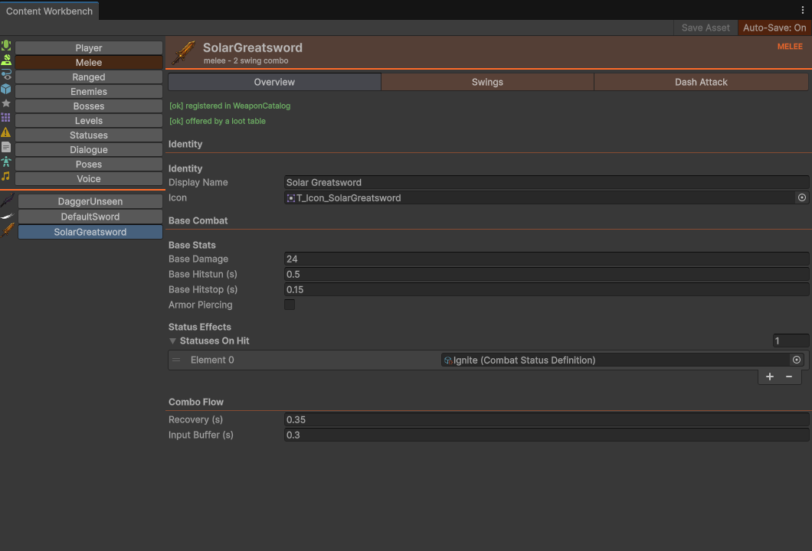
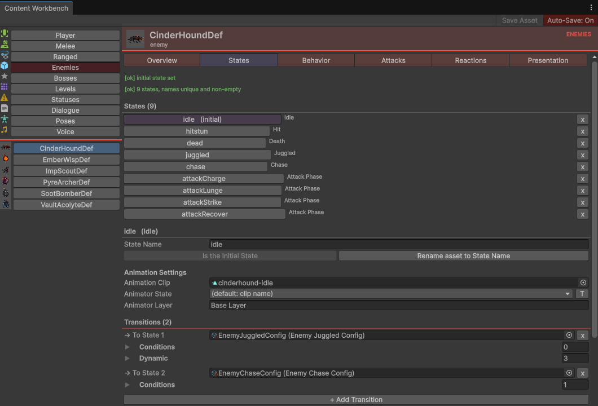
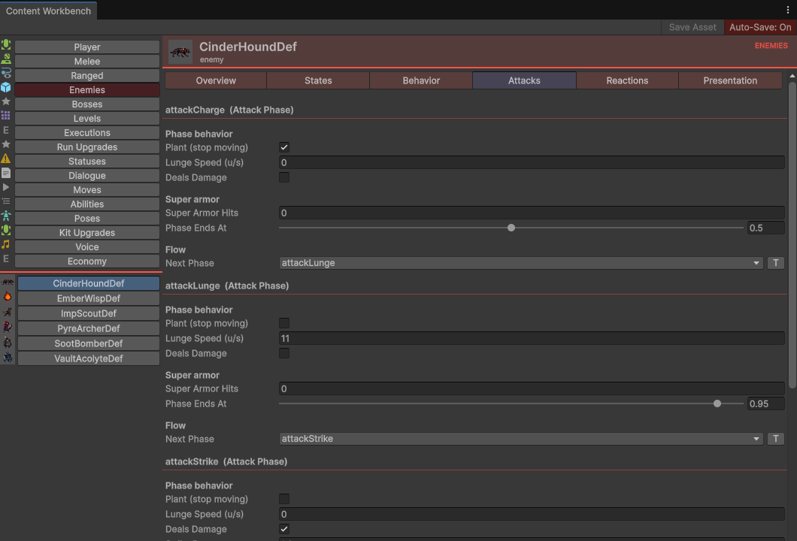
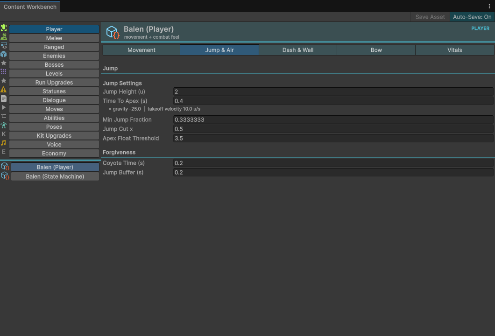
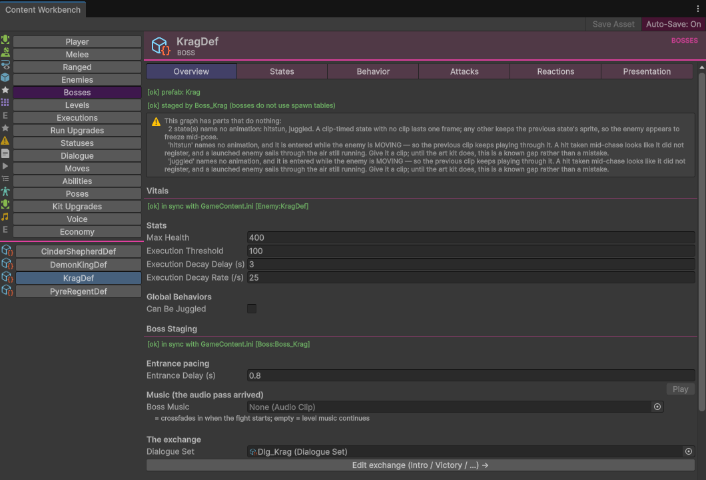
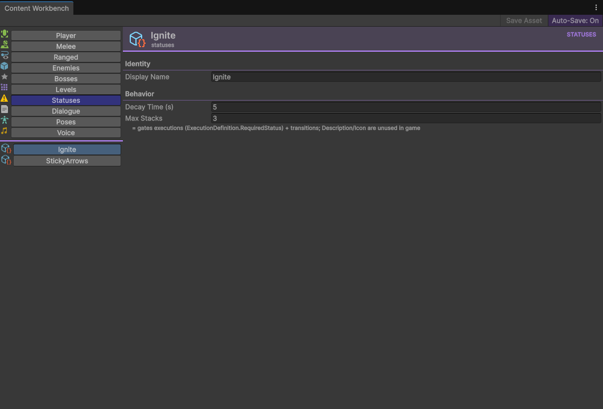
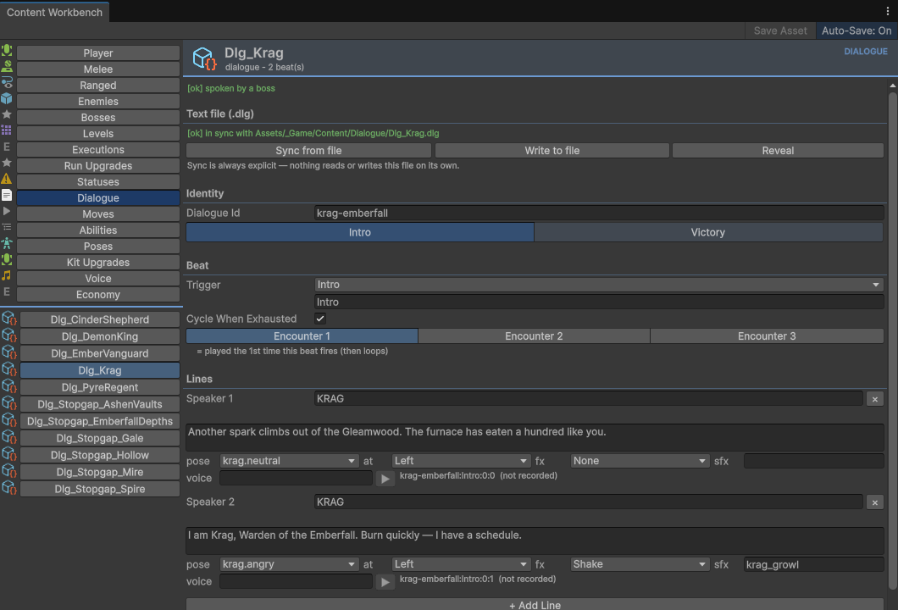
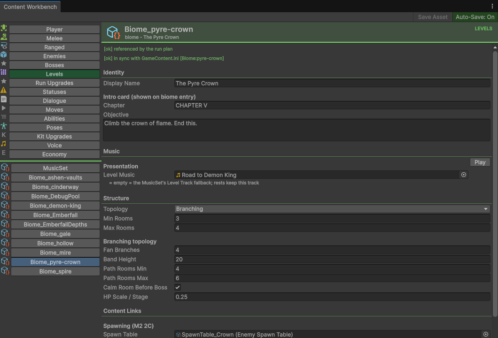
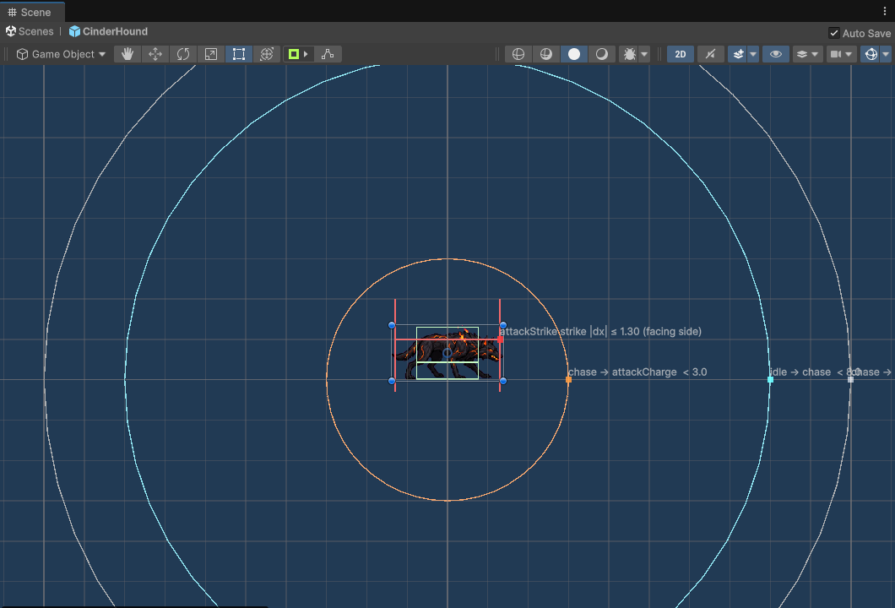

01The promise, and its edges
Nearly everything in this game is data on ScriptableObjects and text files, edited through tools that build themselves from declarations. That is not a preference — it is the architecture, because of where the project is going.
What you can change with no engineer at all
Every combat number
Weapon base damage, per-swing multipliers, hit windows, hitbox reach and height, hitstun, hitstop and its depth, lunge, knockback, screen shake, execution points, the bow's draw and perfect window and the arrow it fires. Enemy health, execution threshold, juggle-ability, chase speed, attack phase timings, super armor, trigger ranges. → Combat · Enemies
Whole enemies and bosses, including their brains
An enemy's finite state machine — the states it has, which one it starts in, and every transition between them — is authored data you build in the Workbench's States sub-tab. New creatures need clips, a definition, state sub-assets, a prefab and a spawn-table row. No code. → Enemies §07
The run itself
Which biomes exist, what they are called, how many rooms they generate, how they branch, which enemies spawn there, which boss ends them — and the node web that decides what a run visits and in what order. All text in GameContent.ini. → Levels · Tuning §08
Progression and the economy
What the Shopkeeper sells, what it costs, how it scales; which directional attacks the player buys; which per-run modifiers a run can pick up and how far they stack. Each is one asset with a stable id. → Progression
Rooms, and every word spoken
Rooms are Unity prefabs you paint with the greybox tileset and tag with sockets. Dialogue is a plain-text .dlg file per speaker, with poses, sides, shake/flash and sfx on each line. → Levels §03 · Dialogue §06
Sound and music
Every clip slot is an AudioClip field with a Play button beside it in the Workbench — swing sounds, hurt sounds, per-state telegraphs and death stings, biome and boss music, the menu and hub tracks. → Audio
And what you still cannot — stated now, not discovered later
| You cannot… | Because | Detail |
|---|---|---|
| Make a status do something beyond burn and slow — weaken, silence, stun | CombatStatusDefinition holds a display name, a decay time, a max stack count and a three-field damage/slow payload. A status is a gate, and today it gates exactly one thing: executions (RequiredStatus + MinStatusCount) and, since 2026-08-18, FSM edges — status Ignite >= 2 in the Workbench and in a mod’s [Graph:] text, so the Workbench note that has always said "+ transitions" is true at last. It also ticks damage and slows movement (DamagePerTick, TickInterval, SlowAmount); what a player can see of either is still a name and a count, which is OUTSTANDING "A status effect is unreadable". | Workbench §10 |
| Invent a new kind of effect for an upgrade or a run modifier | Both are addressed by an enum — MetaEffect and RunEffect. Reusing one that exists needs no code at all; a genuinely new one needs the enum value plus its single apply seam. | Progression §07 |
| Add a new movement verb (a glide, a wall-run) | An ability is a flag the room-reachability model has to understand, and every FSM edge that reaches it has to be gated. Retuning the two shipped abilities is free; adding a third is not. The double jump is the exception, and it is data: RunEffect.AirJumps is a run-modifier effect, PlayerContext.JumpBudget sums every held modifier carrying it (base 1), and both the authored jump edges and the dash's code edge read that budget — so a boon or a campaign's Progression/*.ini can grant one today with no code. Nothing shipped carries it yet, on purpose: a second jump changes which rooms are clearable, and where it enters the game is Hisham's call — OUTSTANDING "Where does the air jump come from — a boon, a shop ability, or nowhere". | Progression §04b · §04d |
| Add a new directional attack slot | The eleven slots are bits in a MoveSet flag enum — seven melee (MoveSet.Melee), the bow's three (MoveSet.Bow) and the dash strike (MoveSet.Dash, the one that is not a footing×direction pair) — with a key grammar (aerial:down, ground:up, bow:forward, and a bare dash). Authoring a move in an existing slot is data; a twelfth slot is code. | Progression §04c |
| Add a new kind of enemy state | + Create State lists the concrete config types that exist — Chase, Float Chase, Attack Phase, Projectile Attack, Summon, Relocate, Hazard Phase, Ground Hazard, Idle, Hit, Juggled, Death, plus the execution configs. A behaviour outside that vocabulary is a new class. | Enemies §02 |
| Make an unwired dialogue beat speak | Only Intro and Victory have call sites. Defeat, Phase Two and Banter are the agreed vocabulary with nothing calling them — authoring them is legitimate work, but the content will be silent until someone adds the call. | Dialogue §03 |
| Author the ranged Draw Sound or Perfect Force × | Draw Sound has no reader at all. Perfect Force × is read on a perfect release, but it only scales a knockback magnitude the game never applies — inert, not unread. Either way nothing you set reaches the screen, and the Workbench hides or footnotes them on purpose so you do not spend an afternoon on a dial that does nothing. | Workbench §06 |
Where the answer is no, the wiki says so out loud. Silent descoping reads as abandonment — see Modding §08, which spells out that the modding tier buys retune, not extend, for moves and abilities.
02The four authoring surfaces — which one, and why
There are exactly four places a designer changes the game. They do not overlap, and picking the wrong one is the single most common way a change appears not to work.
| Surface | Reach it with | Edits | Persists | Use it for |
|---|---|---|---|---|
| Content Workbench the main one | Gleamwood ▸ Content Workbench, or right-click an asset ▸ Open in Content Workbench | The .asset ScriptableObject itself | Permanent, versioned in git | Everything with a number on it: weapons, enemies, bosses, biomes, statuses, the player, upgrades, moves, dialogue |
GameContent.ini | Any text editor, then Gleamwood ▸ Import Content INI | Imported one-way into the same .asset files | Permanent after import | The run's shape: the node web, biome generation rules, boss staging, enemy vitals, rests. Bulk edits and diffable review |
| F1 debug panel | F1 in play mode | A per-session clone of the player settings, plus live scene components | Dies with the session — deliberately. One exception: the Camera tab persists into a tracked file (§06). | Feel questions you can only answer while moving: jump height, dash distance, movement speed. Then go write the answer into the asset |
Mods/<id>/ | Text files beside the executable (in this repo: the Mods/ folder next to Assets/) | Nothing — overrides are applied to a private copy each run | Permanent, but scoped to one campaign | Campaign-scoped variants, and dogfooding the modding surface a player will use |
Mods/ folder never touches the project's own content at all.03Surface A — the Content Workbench, tab by tab
One window for every number a designer tunes. Gleamwood ▸ Content Workbench opens it; a fresh window lands on Melee. Right-clicking an asset in the Project window and choosing Open in Content Workbench opens the window and selects that asset on the correct tab.

[ok] registration checks. Those two lines are the first thing to read on any asset: they say whether the game can actually reach it.Learn four row types and you can read every tab
| You will see | It means |
|---|---|
A green [ok] … or red [!!] … line at the top of an Overview | Registration. Is this asset wired into a catalog, loot table, spawn table, run plan or boss staging? Red = the asset exists and the game will never show it. These are cached — after you fix one, close and reopen the window to see it turn green. |
A small indented line starting = | The resolved number after multipliers and derivations: = deals 24 damage (before run upgrades), gravity -25.0 | takeoff velocity 10.0 u/s (what the shipped PlayerSettings.asset's Jump Height 2 / Time To Apex 0.4 actually derive). You never do the arithmetic yourself. |
| A clip field with a Play button | SoundRow. Auditions the clip in the editor. A separate indented Volume row appears only once a clip is set. |
A dropdown with a small [T] button at its right edge | A validated name picker — animator states, or another FSM state's id. It lists only real ones and shows [MISSING] in red for a name that resolves to nothing. [T] drops to raw typing; a wrong hand-typed name is a silent no-op in game. |
EditorPrefs key and what rides along is Workbench §04. These are the real shared assets — there is no draft copy, so never "experiment" on one you do not intend to commit.The rail — sixteen tabs, and what each is for
The rail is task-ordered, not alphabetical. This table is the day-one map: I want to change X → go here. The exhaustive field-by-field reference for every one of these lives on Workbench, and that page is the source of record — do not trust a second copy of it anywhere.
| Tab | Sub-tabs | Reach for it when you want to… |
|---|---|---|
| Player | Movement · Jump & Air · Dash & Wall · Bow · Vitals · Attacks plus a second entry, Balen (State Machine), on the shared States surface | Change how Balen feels. Jump Height and Time To Apex derive gravity for you — the effective label prints the result. The per-state feel numbers are routed onto these six by domain: the fall's gravity multiplier sits under Jump & Air, the wall-slide under Dash & Wall, and Attacks holds only the melee-attack and dash-attack configs. → §09 |
| Melee | Overview · Swings · Aerials · Ground · Dash Attack | Author a blade. A weapon authored from only Overview and Swings ships with no directional moveset — Aerials and Ground are where the stick-held moves live. → §05 |
| Ranged | Overview · Shot & Timing · Presentation | Author a bow. The arrow carries the damage: its Speed, Durability, Range and Lane Radius are on the The Arrow group. → §06 |
| Enemies | Overview · States · Behavior · Attacks · Reactions · Presentation | Build or tune a creature. States is where the brain is built; the other sub-tabs tune states that already exist. → §07 |
| Bosses | The same form plus a Boss Staging group that edits the BossDefinition in place — entrance delay, boss music, dialogue set, adds table, reward. | |
| Levels | none | Set the global MusicSet (menu / hub / level-fallback tracks), or a biome's intro card, music, generation Structure and content links. → §08 |
| Executions | none | Retime a finisher. One page per ExecutionPayoffConfig (ten ship, under Enemies/Data/ExecutionDefinitions/ExecutionConfig/), carrying the beat list and the timeline those beats resolve to. → Executions |
| Run Upgrades | none · has New | Author a per-run modifier — a rule change a run picks up and loses. → Progression §04d |
| Statuses | none | Set a status's decay time, max stacks and its damage/slow payload. Six fields in three groups, and the reference example of a tab drawn from nothing but attributes. → §10 |
| Dialogue | Beats are tabs, encounters a toolbar, lines are speaker+text rows | Write or edit an exchange in engine rather than in a .dlg file. → Dialogue |
| Moves | none · has New | Reprice or redescribe a directional attack the player buys. → Progression §04c |
| Abilities | none · has New | Reprice a movement verb. These also decide which rooms the generator believes are clearable. → Progression §04b |
| Poses | none | Map a pose id to a portrait Sprite, so a .dlg line can name a portrait it cannot hold a reference to. |
| Kit Upgrades | none · has New | Author what the Shopkeeper sells permanently. → Progression §03 |
| Voice | none | Attach dialogue audio by key. This is the one asset a second language replaces. |
| Economy | none | Retune what a run earns — the currency's own display name, Gleam per kill, the per-depth and clear bonuses, the slip-away bonus and the per-boss bounty. One asset, Systems/Run/Resources/Economy.asset, and it sorts last on the rail. Kit Upgrades sets what things cost; this sets what pays for them. → Progression §02 |
Where the deep work happens

[T] raw toggle at the right edge. A Swing 1…N toolbar sits above; + Add Swing grows the combo.
idle (initial) marked, then the selected state's fields and its wired transitions. This is the only correct way to add a state — see §09.
attackCharge → attackLunge → attackStrike. Each phase ends at a fraction of its clip and hands off through a Next Phase dropdown of real state ids — lower fractions chain faster.

BossDefinition asset without leaving the window — entrance delay, boss music with a Play button, the dialogue set with an Edit exchange → jump, adds table, reward.
StickyArrows: decay 5s, max 3 stacks, and a note saying what a status is for — gating executions and, since 2026-08-18, FSM edges (status Ignite >= 2), not flavour text. This capture predates the three Payload rows (Damage / Tick, Tick Interval, Slow); Description and Icon stay hidden because nothing reads them.
Dlg_Krag: the Text file (.dlg) sync row up top with its two explicit sync buttons, then the beat strip (Intro / Victory), the encounter selector, and one row per line with its speaker, text and presentation strip. This capture predates the demo-content pass — a fresh one shows pose thumbnails and recorded sfx.04Surface B — GameContent.ini, the run as text
One file, Assets/_Game/Content/GameContent.ini, is the authoring source for the entire run: the node web, every biome, every boss's staging, enemy vitals and the rest sites. It is strictly one-way and editor-only — the game never reads it at runtime.
- Edit the file in any text editor. Sections look like
[Biome:emberfall],[Boss:Boss_Krag],[Enemy:CinderHoundDef],[Rest:Rest_EmberTrail],[Node:start]and[Plan]. - Run Gleamwood ▸ Import Content INI. The importer resolves every key into the SO assets. Missing Biome and Boss definitions are created for you; Enemy and Rest definitions must already exist, because their FSMs and layouts are authored in Unity.
- Read the Console, and fix every error before you commit.
RunContentValidatorauto-runs. Warnings are advisory; errors are not, and an error does not mean nothing was written — the import never aborts partway; it applies everything and reports a count. What an error does mean is now the same for the two typos you will actually make: an unresolvable reference (spawnTable,boss,addsTable,layoutPrefab) leaves that field untouched, and since 2026-08-13 so does a malformed number or bool —maxHealth = 12ologs '12o' is not an integer — keeping the shipped value (12) instead of handing you a zero-health enemy. The one that is still partial isroomPool: an entry matching nothing errors while the rest of the list replaces the old pool anyway. - Commit the
.iniand the touched.assetfiles together. The import is the edit; the assets are its output.
The four grammar rules worth memorising
| Write this | To get |
|---|---|
key = value, ; for comments | Last write wins within a section. Numbers are invariant-culture; bools accept true/1/yes and false/0/no. |
addsTable = - | A bare hyphen clears a reference. On a node, next = - marks it FINAL; bypass = - makes the boss mandatory. |
roomPool = Room_Ember_*, Room_Slip_Ember | Comma lists, and a trailing * is a name-prefix glob over RoomTemplate prefabs, resolved into a name-sorted set. A glob that matches nothing is an error. |
topology = Branching | Enum keys parse case-insensitively and an unknown value errors and lists the legal ones — so a typo tells you the vocabulary rather than defaulting silently. |

[Biome:pyre-crown] block — which is why the form carries an in sync / DIVERGED row. The Structure numbers in this capture are stale (the asset has since changed); read the INI for any figure.nodeId is written into suspended-run files — never rename a shipped one; add new nodes instead. Renaming a biomeId does not break saves, but it breaks every [Node:] biome = reference at import time. The full key-by-key reference is Tuning §08.roomPool order feeds the seeded generator, so adding a room that matches an existing glob can change the layout an old seed produces. Resumed runs re-generate from the current pool — acceptable, but know it is happening.05Surface C — the F1 panel, for questions you can only answer while moving
Press F1 in play mode. The panel builds itself from [Tunable] declarations in the code, which is why a slider exists for some values and not others — and why nothing here is a permanent edit.
| Tab | What it gives you |
|---|---|
| Movement · Dash · Jump · Wall Slide | Live sliders over Balen's feel. Jump derives gravity, so drag Max Jump Height / Time To Jump Apex and never the mover's gravity. |
| Impact | How a hit feels, live: hitstop duration and depth, the perfect-release freeze and its shake, the enemy hit-flash length and colour, every screen shake's duration and amplitude, and the player's own hurt flash and shake — twenty sliders across three hosts (CombatTimeManager, ShakeComponent, PlayerHurtReact). Each host registers itself, so the tab shows only the rows whose host is in the scene: the biome host and the sandbox carry all three; the hub has a ShakeComponent and the player but no CombatTimeManager, so no hitstop or hit-flash rows there. Like every other gameplay tab it dies with the session — transcribe keepers onto the host component (in the scene, or on Player.prefab for the hurt flash) or onto the weapon whose hitstop you were scaling. |
| Hitboxes | Five switches over the in-game overlay: Show hitboxes, All combo swings, Bow lane + arrows, Only while active, Flash the last scan. The master switch is also F2. |
| Camera | Twenty-two hand-built controls, eighteen of which persist. The only tab that persists — read §06 before touching it. Four are session-only: Use Camera Bounds, host-owned runtime state whose restored true is what broke hub camera follow, and the three Pixel Perfect Camera rows, which write the scene camera's PPU and reference resolution — a persisted 720 against the scenes' 640 showed twice as much world at 720p as at 4K until they stopped saving. |
| Troubleshoot | Read-only rows: this run's seed, phase, node, route and stats; your loadout (weapons, moveset, abilities, run modifiers); save slot, campaign, build. Editor and development builds only. |
| Run (dev) | Cheats: Gleam balance, ability and move ownership, per-run modifiers with a Budgets now readout, imbue targets, and Execution gates ▸ Explain executions — which records, per hit, which gate closed on each execution and why. Editor and development builds only. |
| Debug Info | Read-only state rows, refreshed every frame while visible. |
Instantiates the shared PlayerSettings asset and the panel binds to that clone. Slider edits change the clone; the asset on disk is untouched. That is the design — a slider is a question. When you like the answer, go write it into the asset through the Workbench's Player tab. Full mechanics: Tuning §06.DebugSettings/DebugSettings.json outright, not just your key (§06).06The trap — "I changed it and nothing happened"
This one has cost this project real days, twice. Read it before you file a bug against yourself.
Save = true writes its value into DebugSettings/DebugSettings.json — a file that is tracked in git — and the panel re-applies that file at startup, over whatever the scene or the asset authored. Nothing logs that it happened. So you retune the asset, press Play, and see the number you set months ago. The cause is three directories away from where you are looking.It broke hub camera follow: a stale
Camera.UseBounds clamped the camera into a rect the player spawns outside of, so it parked in a corner and never followed.Today the file holds eighteen keys and every one of them is Camera.*. No gameplay control is allowed to persist, and that is enforced rather than merely true: TunableParityTests reads the committed JSON and fails the suite if a key from any declared [Tunable] tab — Movement, Jump, Dash, Wall Slide, Hitboxes, Impact, and whatever is declared next; the tab names are read off the attributes, not listed in the test — ever appears in it. So the trap is closed on the player's feel numbers — but the mechanism is live, and the Camera tab is the surface where it still bites.
The checklist, in the order that finds it fastest
- Did you actually save? Look at the Workbench toolbar for the red unsaved changes label and the title Content Workbench*. Click Save Asset, or turn on Auto-Save.
- Is the asset registered at all? A red
[!!]row on the Overview means the game can never reach it — a weapon absent from theWeaponCatalogor a loot table, an enemy in no spawn table, a biome no run plan node visits. Fix the registration, then close and reopen the window, because the checks are cached. - Is a saved debug value shadowing it? Open
DebugSettings/DebugSettings.jsonat the project root and look for a key matching what you changed. If one is there: press Clear Saved in the F1 footer and restart play mode — it deletes the whole file, taking every sharedCamera.*preference with it, sogit checkout -- DebugSettings/DebugSettings.jsononce you have your answer. To retire a stale value for good, bump the control's key (OffsetY→OffsetYV2) rather than editing the JSON, which is usually somebody's working file — a renamed key makes the old entry inert. - Did an INI import overwrite you? If the field is co-owned (biome Structure, boss staging, enemy vitals), the form's sync row says DIVERGED. Either write the value into
GameContent.iniand import, or accept that the next import will win. Gleamwood ▸ Check Content INI Sync reports every section. - Are you editing the asset the run does not read? Weapon upgrade levels ride a per-run
WeaponInstance, the player's settings ride a per-session clone, and a run modifier stamps its scale onto that clone at spawn. If the number is right on the asset and wrong in game, ask what the run multiplied it by — the F1 Troubleshoot tab prints your live loadout. - Is a campaign active? Check this before you check the toggle. A bound save slot applies its campaign's overrides in all six domains, in the editor as well as in a build — a campaign is already an explicit choice, so it needs no second opt-in. The Gleamwood ▸ Simulate Mods ▸ … toggles exist only to force the enemy, weapon, player or dialogue domain to read a campaign's files with no slot bound to it. So a toggle sitting OFF proves nothing: if a campaign is bound, your asset edit may still be being beaten by a text file (§07).
- Is it a dead field? Ranged
DrawSound, and a status'sDescriptionandIcon, are authored and read by nothing;PerfectForceMultiplieris read but inert (it scales a knockback magnitude the game never applies). The Workbench hides or footnotes all of them; see Workbench §12 for the full honesty list.
git checkout -- DebugSettings/DebugSettings.json. A suite run no longer touches it: DebugUI.SaveValues writes nothing when the panel has nothing to persist, and Tools/run-tests.sh restores it anyway as belt and braces. It used to strip roughly 126 Camera.* lines out of it on every run — a fixture's panel has no Camera tab, so it saved an empty list at boot — and a diff here after a run now means the opposite: something persisted that should not have — and committing that is how the next person inherits a camera that behaves differently from yours.07Surface D — Mods/<id>/, campaign-scoped overrides
A mod is a campaign: one folder with a mod.ini in it, discovered beside the executable — which in this repo means the Mods/ folder next to Assets/. Exactly one campaign is ever active, and a save slot is bound to it for life.
Mods/
my-campaign/ <-- the folder name IS the campaign id, and it is save data
mod.ini <-- without this the folder is ignored entirely
Enemies/ Weapons/ Dialogue/ Player/ Progression/
Campaign/ <-- the run's shape
Rooms/ <-- .room drawings: the one place text makes a NEW asset| Folder | What a text file there does | Editor needs |
|---|---|---|
Enemies/ | Retune any enemy, derive a variant, or write a whole new behaviour graph — with your own art | Nothing, when a campaign is bound. Without one, Gleamwood ▸ Simulate Mods ▸ Enemies / Weapons / Dialogue / Player forces that domain on |
Weapons/ | Retune any weapon per combo swing, per direction and for the dash; or declare a new one | |
Dialogue/ | Rewrite any character's lines, or translate the game, in the same .dlg format you already author in | |
Player/ | Reskin Balen. Look only — a skin can change which pixels play, never what the player does | |
Progression/ | Retune or declare shop upgrades and run modifiers; retune move and ability prices | Nothing, and there is no toggle to find — active whenever a campaign is |
Campaign/ | Re-web the run, retune biomes along it, and supply your own rooms as .room drawings |
Mods/_Templates/example-campaign/: a mod.ini plus one file per shipped enemy, weapon and conversation, carrying the real current values, correctly spelled, with every line commented out. Copy it up one level, rename it, delete one ;, change one number. In this repo there are two worked examples and one set of generated templates, and they come from three different places. Documentation/ExampleMod/ is a tasteful worked campaign, hand-kept apart from its Player/ skin (Gleamwood ▸ Dev ▸ Player ▸ Generate Example Skin). Documentation/TestModpack/ is a garish verification pack, regenerated by Gleamwood ▸ Dev ▸ Enemies ▸ Generate Test Modpack. The per-domain template files a build ships are regenerated by the Generate Mod Templates items (Gleamwood ▸ Dev ▸ Weapons / ▸ Enemies / ▸ Progression, plus ▸ Player ▸ Generate Skin Template and ▸ Run ▸ Generate Campaign Template), which write Documentation/WeaponTemplates/, EnemyTemplates/, ProgressionTemplates/, PlayerSkinTemplate/ and CampaignTemplate/ — so those cannot drift from the code that reads them. Full tour: Modding.08Nine recipes, end to end
Each of these is the whole job, condensed. Build a Game walks eight of the nine as full chapters — weapons ch05, enemies ch03, bosses ch04, biomes ch02 and rooms ch09, dialogue ch07, boons and shop upgrades ch06 — at the resolution a first campaign needs, so start there for the long form. The execution recipe is only here. Where a step has a reference page of its own, the link takes you there.
1 · A melee weapon
- Assets ▸ Create ▸ Combat ▸ Weapon ▸ Melee Weapon into
Assets/_Game/Player/Resources/Weapons/. Name it its final name now — the asset name is the save id, so renaming a shipped weapon breaks player saves. - Right-click it ▸ Open in Content Workbench. Fill all five sub-tabs: Identity and Base Combat on Overview, the combo chain on Swings, the stick-held moves on Aerials and Ground, and the dash on Dash Attack. Stopping after Swings ships a weapon with no directional moveset.
- Register it twice. Add it to the
weaponsarray ofAssets/_Game/Systems/Run/Resources/WeaponCatalog.asset(without this, a resumed run cannot restore it) and toAssets/_Game/Systems/Run/Weapons/Loot_HubMelee.assetas a{weapon, weight}entry (without this, no pedestal will ever offer it). Weight 0 = never offered. - Pick animator states from the dropdowns; leave one empty to accept the default. Hook the per-swing Swing Sound and the dash sound — every row has a Play preview.
- Verify: save, and confirm both Overview checks read
[ok]— they refresh on the save, not on the drag. Then tune the boxes by dragging, not typing (§10).
Two rows newcomers under-use: Hitstop Depth and Vertical Offset — Workbench §05 carries what each one does and why it matters.
2 · A bow
- Assets ▸ Create ▸ Combat ▸ Weapon ▸ Ranged Weapon into the same folder, named final.
- Shot & Timing: set Draw Time (releasing earlier cancels the shot), the Perfect Window min–max slider and Perfect Damage ×, and Execution Points. Watch the line under the slider. The window has to open at or after Draw Time and close at or before the player's Max Charge (1.50 s, on the bow-aim state — Player ▸ Bow — not on your weapon); anything outside that pays nothing, and the form says which slice and why. The slider goes to 3 s, so overshooting the far edge is easy.
- Fill The Arrow group. The projectile is what carries the damage — leave it empty and the bow fires something invisible. Speed 0 = the prefab's own; Durability is how many enemies one arrow may strike — 1 is a clean single hit and 2 or more pierces, while 0 means "ask the bow-aim state's Single Target switch", which is on in every shipped bow and so also reads as single target (turn it off and 0 becomes unlimited). Range and Lane Radius at 0 fall back to the bow-aim state's values the same way.
- Presentation: Release and Perfect Release sounds, the hit effect, and three animator dropdowns (Draw on layer 0; Hold and Release on layer 1, which apply while moving only). Leave the layer-1 two empty unless you have art drawn to match — the defaults are the torso half of a run-and-aim drawing and a mismatched clip splits the character at the waist.
- Register in
WeaponCatalog.assetand inLoot_HubBow.asset. Skip Draw Sound and Perfect Force ×; the first has no reader, the second is read but inert (§01). → Combat §04
3 · An enemy
- Clips. One non-looping clip per phase plus idle, chase and death. The clip is the timer — there are no animation events, so the frame rate is the intended duration. Build a
SpriteClipSetwith Gleamwood ▸ Dev ▸ Animation ▸ Clip Set Builder. - Assets ▸ Create ▸ Enemies ▸ Enemy Definition. Set Max Health, Execution Threshold (the points this enemy takes before it can be executed — 100 by default) and Can Be Juggled.
- On the Workbench's States sub-tab, press + Create State for each state. The minimum viable set every shipped enemy except the Demon King has: Idle, Chase (or Float Chase), Hit, Juggled, Death, plus an attack chain
attackCharge → attackLunge → attackStrike → attackRecoverlinked by Next Phase, the last one back tochase. A boss with Can Be Juggled off needs no Juggled state, and may name its phases whatever it likes — the Demon King runs two chains (attackCharge → attackSlam → attackRecoverand an enraged twin) alongside a bolt cast, an arena ignite and a relocate. - Transitions, on the same tab: idle→chase on a Distance LessThan (~7–8), chase→attackCharge at about the strike range, chase→idle on a GreaterThan leash (~10). Set the initial state.
- Prefab — and it must be saved into
Assets/_Game/Enemies/Prefabs/. That folder is not a tidiness convention, it is the lookup: the Workbench finds a definition's prefab by scanning that one folder and nothing else, so a prefab saved anywhere else is invisible to it for ever. Everything the next three steps promise is drawn only after a prefab is found — the spawn-table check in step 6, the hurt-sound row on Presentation, and the entire Boss Staging group recipe 4 leans on — so the symptom is a red no prefab references this definition on the Overview and then a form that quietly has fewer rows than this recipe describes. Reopening the window does not help; moving the prefab does. Root gets a SpriteRenderer + SpriteAnimator + Rigidbody2D + Collider2D +EnemyStateMachine(assign the definition and the hurt sound) +CombatStatusManager+EnemyKillReporter+EnemyRangePreview. Flying enemies:gravityScale0. - Spawn table. Add the prefab to an
EnemySpawnTablea biome references, or it will never appear. The Overview check says so in red until you do. - Tune vitals from
[Enemy:<DefName>]in the INI; everything else in the Workbench. → Enemies §07
4 · A boss
- Build the enemy exactly as above. A boss is an ordinary enemy that has been staged.
- Assets ▸ Create ▸ Gleamwood ▸ Boss Definition, and point its
bossPrefabat your prefab. That reference is what makes it a boss — there is no "is boss" checkbox, and an enemy with no prefab can never be one. - Fill Boss Staging from the Bosses tab: entrance delay, boss music (empty = level music continues), the dialogue set, an optional adds table, and the reward prefab.
- Give a biome the boss:
boss = Boss_YourBossin its[Biome:]block, then import. Bosses never use spawn tables. - Save the BossDefinition — boss classification is cached and that cache clears on the next import, so the definition moves to the Bosses rail when you save rather than when you reopen. → Enemies §08
5 · A biome, and a room to put in it
- The biome is a block of INI. Give it
displayNameandobjective(the intro card — theCHAPTERband numbers itself from the run, so leavechapterout unless you want a fixed one),minRooms/maxRooms, the branching keys, aroomPool, aspawnTable, optionally abossand amusicTrack. Import — the definition asset is created if it does not exist. - Put it on the web. A biome nobody visits is invisible: add a
[Node:<id>]naming it and point some existing node'snextat your new id. The Overview check reads not in any RunPlan node — runs never visit it until you do. - A room is a prefab: duplicate an existing
Room_Ember_*, or build root +RoomTemplate+ aGridwithFloorsandWallstilemaps carryingTilemapCollider2D, both on layerLevel(plus an optionalPlatformsmap on layerOneWay, itsCompositeCollider2Dset toPolygons). Duplicating is the safer branch, because nothing validates theLevellayer. A tilemap left onDefault— which is what a freshly created GameObject gets — is filed as solid by the reachability audit and is invisible to the player's mover, so both gates in step 7 pass on a room you fall straight through. - Paint greybox first, starting at cell (0,0) — content that does not start there, or a tilemap offset from the room root, is a validator error. Size it from the controller, not from taste: gaps 2–3u (3u hard max on the main path), ledge step-ups 1u with a 2u ceiling, and rooms typically 16–30 wide — the validator hard-errors below 8×8 and warns on a middle room under 12 wide. The budget derivation is
Documentation/ROOM_STANDARDS.md. - Sockets and tags. Add sockets on the
RoomTemplateand leave the doorway un-painted; check the cyan gizmo lines up with the hole. Entry rooms want an R socket + anEntryPointchild; Exit rooms an L socket +BiomeExit; a boss arena L+R +BossGate+ exactly oneisBossPointmarker. - Place
EnemySpawnMarkers on floor cells with at least 3u of clearance, then join the pool — usually the name already matches the biome's glob, so just re-import. - Prove it: Gleamwood ▸ Audit Room Reachability, then Gleamwood ▸ Validate Run Content. Both clean or the room is not done. → Levels §03
6 · A dialogue set
- Create a
.dlgfile inAssets/_Game/Content/Dialogue/. First line isid: your-slug— that is the save key, one per file. - Open a beat with
@Intro, an encounter with---, then writeSPEAKER: textlines. Indent a following line to continue the one above. A;at the start of a line is a comment; a;mid-sentence is just punctuation. - Add presentation in brackets:
KRAG [krag.enraged|right|shake|sfx:krag_growl]: Enough.—left/rightis the side,shake/flash/nonethe effect, and any other bare word is a pose id. That last rule is what makes a typo loud:[shke]becomes an unknown pose with a file and line number instead of a shake nobody notices. - Gleamwood ▸ Dialogue Tools… ▸ Sync All From Files. It refuses a file with parse errors and changes nothing — a half-applied set is worse than a stale one. Nothing syncs on its own; there is no file watcher in either direction.
- Preview it without fighting a boss: the same window plays any beat and encounter through the real controller, by index, bypassing rotation.
- Point a boss at it via the Bosses tab's Dialogue Set field. Remember §01: only Intro and Victory are wired. → Dialogue §06
7 · An execution
- Assets ▸ Create ▸ Combat ▸ Execution Definition. Give it an Execution Name and point Execution Config at the finisher state config. That state auto-registers — do not add it to the definition's
Stateslist. - Author the trigger. Required Damage Type (
MELEE_SLASH/RANGED_PIERCE/DASH_SLASH) is mandatory; then optionally Must Be Airborne (which means juggled, not merely off the ground) or Must Be Grounded, Require Specific Reaction + Required Reaction (what this hit is — Standard, Spike, Crumple or Push), Require Recently Spiked (what just happened to them, inside a 0.6s window), and a Required Status + Min Status Count. - Add it to the enemy definition's
Executionslist — in the right position. Read §09 before you drop it in; the position is behaviour. - Test it with F1 ▸ Run (dev) ▸ Execution gates ▸ Explain executions, which prints per hit which gate closed on each entry and why — including the two reasons the list is never consulted at all (the meter was not full before the hit; this enemy has already been executed once).
8 · A shop upgrade
- Workbench ▸ Kit Upgrades ▸ type a name ▸ New. It lands in
Assets/_Game/Systems/Run/Resources/KitUpgrades/withidanddisplayNameseeded. - Set Effect from the existing
MetaEffectlist, then Per Level, Max Level, Base Cost and Cost Growth (added per level beyond the first). Write a Description in the player's language — it is what the shop's detail pane shows beside the list when the player highlights that row. - New already listed it in
MetaUpgradeCatalog's definitions, at the end — the same create-handler that regenerates the run-modifier catalog in recipe 9 registers all four progression types, so the "I made it and nothing happened" step is done for you. Your job is the shop order: drag it up the list if it does not belong last. Then run Gleamwood ▸ Dev ▸ Run ▸ Bake Kit Upgrades. The baked array is what the game reads, so a forgotten bake means a row that does not exist — a test catches it rather than shipping a phantom. - Nothing else. The Shopkeeper's Upgrades tab reads the baked array, so the row appears by itself.
id is a save key, and the levels ride a parallel array keyed by it. Renaming a shipped upgrade does not merely orphan the purchase — the player keeps the Gleam they spent and loses every rank. And Per Level 0 is the quiet failure: the upgrade sells, the level rises, and the bonus is nothing. The asset's own validator refuses it.9 · A run modifier (a boon)
- Workbench ▸ Run Upgrades ▸ New. It lands in
…/Run/Resources/RunModifiers/, and creating it regenerates the ordered catalog for you — which matters, because the runtime walks the catalog, not the folder. - Write the Description as what the rule becomes, not what the number is. This tier changes rules; the forge changes numbers.
- Pick an Effect. Several modifiers may share one — that is the point: the seams sum every held modifier carrying an effect rather than looking up an id, so a second "+1 cancel" with a different name and price needs no code at all.
- Set Max Stacks by asking what it bounds. This is a safety property, not balance: several of these raise a budget that is the only thing ending a loop — an uncapped combo-cancel budget is an attack state the player never leaves. "We cannot prove this terminates" is a sufficient reason to lower it.
- On a scale effect, set Scale Per Stack to something other than 1, or the entry is refused — one stack that multiplies by one is the worst kind of reward.
- Test it with F1 ▸ Run (dev) ▸ Per-run modifiers. Those sliders apply immediately, mid-run, and the Budgets now row underneath shows the numbers the controller actually reads — so a slider that says 2 against a game behaving like 1 is visible rather than mysterious. → Progression §04d
09The ordering rules that bite
Several lists in this project are behaviour, not presentation. One inspector drag reorders them, nothing warns you, and the symptom looks like a broken feature rather than a moved row.
Executions: first match wins
EnemyDefinition.Executions is walked top to bottom and the first entry whose conditions pass is the one that fires. Everything below it is skipped for that hit. Two consequences follow, and both were live bugs before they were rules:
| Rule | What goes wrong without it | What you would actually see |
|---|---|---|
| Most specific first | An entry that asks for strictly less than a later one makes that later one permanently unreachable. Meteor asks for "juggled". Skyhook asks for "juggled + a Spike hit". Meteor is a strict superset, so putting it first swallows Skyhook forever. | "The Skyhook finisher never plays." You perform the harder input correctly, the enemy dies with the easier execution's animation every single time, and no error appears anywhere. |
| Status-gated catch-alls last | A status gate is a state the player carries around rather than a thing they just did — so ahead of the rest it swallows every execution sharing its damage type. Firestorm at slot 4 once made Groundbreaker, Meteor, Pinfall and Skyhook all unreachable. | "Executions broke when I equipped the Solar Greatsword." The weapon applies Ignite on every hit, so the Ignite-gated finisher matches first, always. Swap the weapon and everything works again — which sends you hunting in the weapon. |
ExecutionTriggerTests enforces the strict-subset half automatically; the catch-alls-last half is convention, stated in the code, in Enemies §05 and here. Every shipped juggleable enemy carries all ten executions in the same order, and the six CanBeJuggled: 0 ones (Krag, the Cinder Shepherd, the Pyre Regent, the Demon King, the Ember Wisp and the Vault Acolyte) carry the same three in the same relative order — so when in doubt, copy the order from a shipped definition rather than inventing one.
The other four lists whose order is load-bearing
| List | Order decides | Symptom of getting it wrong |
|---|---|---|
A biome's resolved roomPool | What the seeded generator builds. Globs resolve name-sorted. | Old seeds stop producing the layout they used to. Not a bug — but know it happened before you go hunting. |
RunModifierCatalog | What the offer roll walks to build its pool of three. | The same room offers different boons after a reorder; and an asset nobody listed exists and is never offered at all. |
MetaUpgradeCatalog definitions | The order of rows in the Shopkeeper's Upgrades tab. | Cosmetic — but a row missing from the list, or a missed Bake Kit Upgrades, is a purchase that never appears. |
| Transitions out of one FSM state | Which edge fires when two could. The machine takes the first match. | Two edges from the same state to the same target cannot stack, so the machine merges them: one edge, both conditions OR’d, the higher priority — neither condition goes dead. It still warns naming both ends, once per pair per session, because two places deciding one exit is a smell even when it is safe: a wrong condition folded in makes the edge fire more. |
10Testing your change
Four surfaces, in the order they catch things. Wiring first, behaviour second, feel third — and only then the question of whether it is any good.
The validators, before anything else
- Gleamwood ▸ Validate Run Content — must be 0 errors. It is also the build gate: a player build refuses to start while content is broken. Scripts still compile normally, so do not go hunting for a compile error that will never appear.
- Touched a room? Gleamwood ▸ Audit Room Reachability as well.
- Touched the INI? Gleamwood ▸ Check Content INI Sync to be sure nothing is DIVERGED.
- Gleamwood ▸ Run PlayMode Tests — all green; the run writes the count and any failures to
Logs/playmode_test_results.txt. Save your open scenes yourself first — the menu item does not do it (it calls the Test Runner API directly), and a dirty scene raises a silent "Scene(s) Have Been Modified" modal that wedges the runner with no results file ever written. OnlyTools/run-tests.shsaves for you. Afterwards,git checkout -- DebugSettings/DebugSettings.json.
Playing it — and where
Assets/_Scenes/3.TestSandbox.unity is the hand-testing scene: press Play in it and you are swinging in seconds, with no run, no save slot and no generation between you and the change. Two things to know before you trust it:
| Fact about the sandbox | What it means for your test |
|---|---|
| It has no save slot bound | Every ability and move reads as owned, and the HUD hides the run-scoped rows. Good for combat, useless for testing a purchase gate — that needs a real run from the hub. |
It is compared against 3.BiomeHost by a test | SandboxParityTests exists because the sandbox was once missing CombatTimeManager and ShakeComponent — so hitstop and screen shake silently did nothing there while working perfectly in the real host. Every judgement about how a hit felt was being made in a scene that could not show two of the three things that make it feel like anything. If that test is green, the two scenes agree. |
| It gets menu music | The music director routes on scene-name substring and the sandbox matches no level rule. Not a bug; do not tune biome music here. |
| It has no dialogue panel | Only 3.BiomeHost and 4.RestHost carry one. In the sandbox every line is skipped silently — no error, no box. Preview dialogue with Gleamwood ▸ Dialogue Tools… instead. |
For anything about the run — generation, spawns, rests, offers, the shop, resume — play from the hub and take a real run. New content only counts once it has shown up in one.
Seeing the boxes you authored
Two places, and they answer different questions.
In play mode — F2
The in-game overlay draws the real hitboxes as combat happens. The same five switches live on F1 ▸ Hitboxes: show at all, all combo swings, bow lane + arrows, only while active, and flash the last scan. Use it to answer "did that swing's box ever reach the enemy?" — which is a different question from what the numbers say.
In the Scene view — drag, don't type
Select the Player prefab and the preview draws every swing box, the violet dash box, each directional move that has its own numbers, and the bow's origin and lane, each with cube handles you drag. Select an enemy prefab and every range becomes a ring you pull. Handles write straight to the asset, with Undo.


"It did not work" — what it usually means
| What you saw | Usually |
|---|---|
| The content never appears in a run | Not registered. Weapon missing from the catalog or a loot table; enemy in no spawn table; biome on no run-plan node. The Overview's red [!!] row names it exactly. |
| The number in game is not the number on the asset | Something is between you and it: a saved debug value, an INI import, a per-run clone, or an active campaign. Work §06's checklist in order. |
| An animation simply does not play | A wrong animator state name is a silent no-op. If you typed it through the [T] raw toggle, nothing validated it. Switch back to the dropdown and look for [MISSING] in red. |
| An enemy locks up or never leaves a state | A transition with no target (the runtime skips those in silence), a state with a blank StateName (it registers under "" and no transition can reach it), or a duplicate name (which throws). The States sub-tab shows all three as red rows before you leave the window — which is why building states by hand goes wrong. |
| A finisher never fires | Either the ordering trap (§09), or one of the gates. F1 ▸ Run (dev) ▸ Explain executions tells you which and why, per hit. |
| A boon does nothing | Check the Budgets now row on the Run (dev) tab. If the budget moved and the game did not, the seam is not reading it — that is an engineer's problem, and the phrase to use is "granted but not wired", which is this project's most common bug shape. |
| The whole editor seems stuck after starting a test run | The run was probably aborted, not blocked — read the Console before hunting for a modal. A second run fired into a live play session aborts and writes no results file, so the wait just sits there. |
11When to ask an engineer
The honest list. If your task is here, no amount of clicking will get there — and the ask is small in every case, so say it early rather than working around it.
| Ask for… | Because it needs | Roughly how much |
|---|---|---|
| A status that does something beyond burn and slow — weaken, silence, stun | A field on CombatStatusDefinition and a seam that reads it. Check first: damage-over-time and slow already ship as live fields on the Payload group (DamagePerTick, TickInterval, SlowAmount), all three read by CombatStatusManager. | Small, and it unlocks a whole authoring axis |
| A new kind of shop upgrade or run modifier | An enum value (MetaEffect / RunEffect) plus one apply seam. Reusing an existing effect needs nothing at all — check that first. | Small |
| A new movement ability | A flag, a term in the room-reachability model so the generator knows what it can now cross, and gating on every FSM edge that reaches it (the dash has seven). | Medium, and it touches level generation |
A twelfth move slot (eleven already exist — seven melee, three bow, plus the dash strike, addressed as a bare dash) | A bit in the MoveSet flag enum and a case in the move-key table. | Small — but authoring a move in an existing slot needs none of it |
| A new kind of enemy behaviour — one the shipped state types cannot express | A new state config class. The Workbench then lists it in + Create State automatically. | Medium |
| An unwired dialogue beat to actually speak | A call site. Six lines at the moment it should fire — no registration, no editor change, no new type. | Small |
| A new content type entirely (hazards, pickups, traps) | One ScriptableObject class plus the behaviour that reads it. Tag the class [WorkbenchCategory] and it gets a rail tab, an asset list and a working form for free — nobody edits the Workbench. | Small for the authoring surface; the mechanic is the work |
| A live slider for a number you keep re-entering play mode to test | A [Tunable] attribute on the field and one line to hand the object to the panel. A new tab name creates the tab on demand. | Two lines |
| A new INI key | A mapping in the importer, and a row in Tuning §08's key tables — a key missing from those tables is a key nobody will author. | Small |
| Anything where the answer is "I set it and the game ignores it" | Probably a field nothing reads. Say the field name; that is enough to find out in a minute. | — |
Keep this page honest
- The authoring surfaces. Workbench window, save model and the rail's New row:
Assets/_Game/Editor/ContentWorkbench.cs(including theAssets ▸ Open in Content Workbenchitem) andAssets/_Game/Editor/Workbench/—WorkbenchCategory.cs,WorkbenchCategories.cs,WorkbenchForm.cs,WorkbenchStates.cs,WorkbenchAssetFactory.cs(the New verb andRunModifierCreatedHandler),CatalogRegistrationHandler.cs(what §08 recipe 8 step 3 means by "New already listed it" — one table, four progression catalogs, appended never reordered; the same table also backs Gleamwood ▸ Dev ▸ Run ▸ Report Unregistered Progression Assets, which catches the opposite case — an asset that LEFT its catalog later and is now a file the game never reads while every tab still lists it as editable). Attribute discovery:Assets/_Game/Systems/Authoring/WorkbenchAttributes.cs. The tab and field tables are Workbench's to own — this page only maps tasks onto tabs. - The INI.
Assets/_Game/Content/GameContent.ini·Assets/_Game/Editor/ContentIniImporter.cs(grammar, the-clear, globs, create-vs-tune — and §04's error model:AssignRefreturns without writing,ParseInt/ParseFloat/ParseBoollog and return the field's CURRENT value — they used to return0/0f/falseinto an assignment, and the comment block above them says so — andResolveRoomPoolreturns the partial pool, which is the only asymmetry left) ·Assets/_Game/Editor/GameContentSync.cs(the in-sync / DIVERGED verdict and Check Content INI Sync) ·Assets/_Game/Editor/RunContentValidator.cs(Validate Run Content and the build gate —BuildCheck.OnPreprocessBuildthrowsBuildFailedException, which stops a build, never a compile) ·Assets/_Game/Editor/RoomReachability.cs. - The F1 panel and §06's trap.
Assets/_Framework/DebugUI/TunableAttribute.cs·Assets/_Framework/DebugUI/TunableTabs.cs·Assets/_Framework/DebugUI/DebugUI.cs·Assets/_Game/Player/Code/PlayerDebugUI.cs(the tab list, the release gate, save keys, Clear Saved) ·Assets/_Game/Combat/Code/CombatHitboxViewer.cs(the five Hitboxes switches and the F2 key) · the session clone inAssets/_Game/Player/Code/PlayerStateMachine.cs. The enforcement:Assets/Tests/PlayMode/TunableParityTests.csand the liveDebugSettings/DebugSettings.json— if a key in that file is notCamera.*, §06 is wrong or the suite is red. - Mods.
Assets/_Game/Systems/Modding/ModSet.cs(<game>/Mods, themod.inirequirement, the folder-name-is-the-id rule) · the fourSimulate Modstoggles inEnemyOverrides.cs,WeaponOverrides.cs,PlayerSkinOverrides.cs,DialogueOverrides.cs·ProgressionOverrides.cs·CampaignPlan.cs. The gate §06 and §07 turn on is each class'sEnabled, and every one of them readsModSet.Active != null || EditorPrefs.GetBool(SimulateKey, false)— if that ever becomes an&&, both sections are wrong. The examples and where each comes from:Documentation/ExampleMod/(hand-kept;PlayerSkinExampleGenerator.cswrites only its skin),Documentation/TestModpack/(Editor/Enemies/TestModpackGenerator.cs), and the five template folders written bySystems/Utils/Build/Editor/*TemplateBuildStep.cs. - The recipes' asset types and fields.
Assets/_Game/Systems/Run/MetaUpgradeDefinition.cs·Assets/_Game/Systems/Run/RunModifierDefinition.cs(both carry their ownProblems()validators, which are what §08 quotes) ·Assets/_Game/Enemies/Code/Definitions/ExecutionDefinition.cs·EnemyDefinition.cs·Assets/_Game/Combat/Code/CombatStatusDefinition.cs(the three live Payload fields §01 and §11 name, read every tick byCombatStatusManager) ·Documentation/ROOM_STANDARDS.mdwithAssets/_Game/Systems/Level/LevelLayers.cs(theLevel/OneWaylayer contract §08 recipe 5 leans on — no validator enforcesLevel) ·Assets/_Game/Combat/Code/Definitions/MoveKey.cs(the elevenMoveSetbits §01 and §11 count) ·Assets/_Game/Player/Code/States/AttackStates/PlayerBowAimState.cs(ResolveDurability, and the one live read ofPerfectForceMultiplier). - §09's ordering rules. The execution loop and its comment block:
Assets/_Game/Enemies/Code/EnemyStateMachine.cs(TakeHit), guarded byExecutionTriggerTests. The same-target edge merge and its warning:Assets/_Framework/StateMachine/Core/StateMachine.cs(AddTransition/ReportReplacedEdge). - §10's scenes and its test run.
Assets/_Scenes/3.TestSandbox.unityvs3.BiomeHost.unity, and the parity guardAssets/Tests/PlayMode/SandboxParityTests.cs·Assets/_Game/Editor/PlayModeTestMenu.cs(Run PlayMode Tests — it deletes the results file and calls the Test Runner API, and saves nothing) versusTools/run-tests.sh(which does, viaunity cmd save_all). - Menu paths are
[MenuItem]strings — grep for them before trusting one here. Every path on this page came from one. - This page is a road map, not a reference. Every fact it states also lives on a domain page; if the two disagree, the domain page wins and this one has a bug. It must never be the only place something is written down.